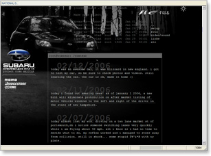
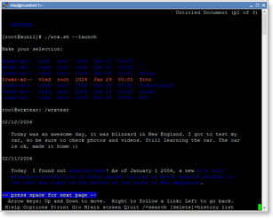

WRXTEAR is a personal auto sport and tuning blog that talks about Subaru Impreza rally-inspired car.


WRXTEAR (Standards compliant pure CSS layout website) in Lynx web browser
January 16, 2006
WRXTEAR is a personal auto sport and tuning blog that talks about Subaru Impreza rally-inspired car.

